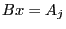
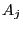
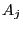

Next: GRBBinvRowi Up: Advanced simplex routines Previous: GRBBSolve
| int | GRBBinvColj ( | GRBmodel | *model, |
| int | j, | ||
| GRBsvec | *x ) |
Computes the solution to the linear system , where  is the current simplex basis matrix and  is the column
of the constraint matrix
is the current simplex basis matrix and  is the column
of the constraint matrix  associated with variable .
associated with variable .
Return value:
A non-zero return value indicates that a problem occurred while computing the desired vector. Refer to the Error Code table for a list of possible return values. Details on the error can be obtained by calling GRBgeterrormsg.
Arguments:
model: The model. Note that the model must have a current optimal basis, as computed by GRBoptimize.
j: Indicates the index of the column of  to use
as the right-hand side for the linear solve. The index j
must be between 0 and cols-1, where cols is the
number of columns in the model.
to use
as the right-hand side for the linear solve. The index j
must be between 0 and cols-1, where cols is the
number of columns in the model.
x: The sparse result vector. The user is responsible for allocating the ind and val fields to be large enough to hold as many as one non-zero entry per constraint in the model.